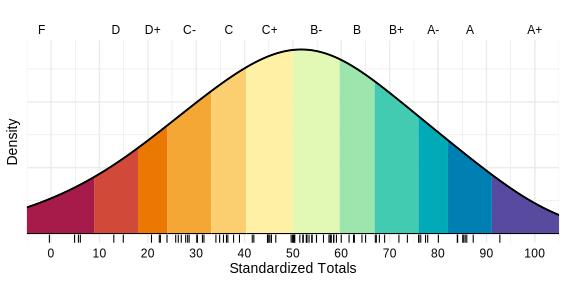

Student: Twyh
Loading last updated time...
Reminder: If you tend to leave this page open in a browser tab, please refresh it periodically to ensure you're seeing the most up-to-date grades and feedback.
Notes:
- 📊 So far, only 25% of the total course grade has been calculated and recorded here. That means the majority of your grade (75%) is still ahead in upcoming assignments, exams, and activities.
- 👉 Don't be discouraged if your grade looks lower (or higher!) than you expected at this point—it's still early, and there's plenty of opportunity to improve, maintain, or hurt, your standing.
- 🯠Values are shown to two or three decimal places; underlying values are stored with greater precision.
- 📠Please report any errors on this page to the instructor.
Click the menu to view results:
Midterm 1
Raw Score = 68.57%
Median = 65.71%
MADN = 12.71%
Standardized Score: 55.62
Weight: 25%
BabBd CeCDB adAdE bDdBB bCAEC AAECB CDCdECourse Total
Weighted Score: 55.62
Median = 50
MADN = 25
Standardized Total: 55.62
Letter Grade: B-
Your percentile rank shows the percentage of students whose performance is below yours.
This means you are currently outperforming about 61% of the class.
Class Distribution
Each short tick mark below the curve represents an individual student's score.